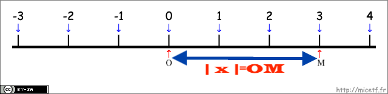
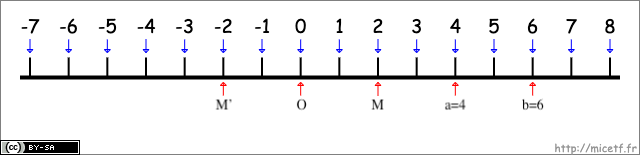
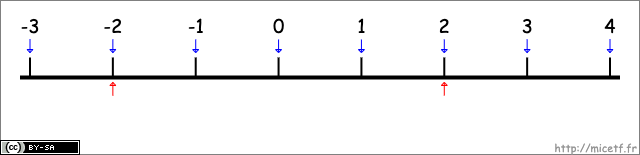
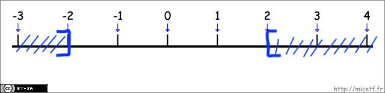

I) Ensembles de nombres
A. Ensemble des entiers naturels
L'ensemble des entiers naturels est l'ensemble des entiers positifs ou nuls.
L'ensemble des entiers naturels est noté ℕ.
ℕ= {0 ;1; 2; 3; 4...}.
Exemples: 3 appartient à ℕ, on note 3 ∈ ℕ
-3 n'appartient pas à ℕ, on note -3 ∉ ℕ
B. Ensemble des entiers relatifs
L'ensemble des entiers relatifs est l'ensemble des entiers positifs ou nuls et des entiers négatifs.
L'ensemble des entiers relatifs est noté ℤ.
ℤ= {...−3; −2; −1; 0; 1; 2; 3...}
Exemples: 2∈ ℤ: 2 appartient à ℤ
-2∈ ℤ: -2 appartient à ℤ
0,5 ∉ ℤ: 0,5 n'appartient pas à ℤ
C. Ensemble des nombres décimaux
L'ensemble des nombres décimaux, noté ⅅ est:
{a/10^n avec a∈ ℤ et n∈ ℕ}
Exemples: 0,56∈ ⅅ
-3∈ ⅅ
3/4∈ ⅅ: 3/4 = 0,75 = 75/100 = 70/10^2
1/3∉ ⅅ
D. Ensemble des nombres rationnels
L'ensemble des nombres rationnels, noté ℚ est:
{a/b avec a∈ ℤ, b∈ ℤ et b≠ 0}
Exemples: 1/3∈ ℚ
4 ∈ ℚ
-4,8 ∈ ℚ
√2 ∉ ℚ
E. Ensemble des nombres réels
L'ensemble de tous les nombres rationnels et irrationnels est l'ensemble des nombres réels.
L'ensemble des nombres réels est noté ℝ.
Exemples: 2; 0∈ ℝ; -5∈ ℝ; 1/3∈ ℝ; √3∈ ℝ; π∈ ℝ
F. Notations et inclusions
Notations: L'ensemble des entiers naturels non-nuls est noté ℕ*.
L'ensemble des entiers relatifs non-nuls est noté ℤ*.
L'ensemble des nomres décimaux non-nuls est noté ⅅ*.
L'ensemble des nombres rationnels non-nuls est noté ℚ*.
L'ensemble des nombres réels non-nuls est noté ℝ.
Propriété: Tout entier naturel est un entier relatif, on note ℕ ⊂ ℤ (ℕ inclus ℤ).
On a aussi les inclusions suivantes:
ℕ ⊂ ℤ ⊂ ⅅ ⊂ ℚ ⊂ ℝ
Schéma récapitulatif:

II) Intervalles de ℝ
Propriété: Tout nombre réel est représenté par l'abscisse d'un point sur la droite graduée.
Exemple: L’ensemble de tous les nombres réels x tels que 2 ≤ x ≤ 4 peut se représenter sur une droite graduée par [ 2 ; 4 ].

La notation [ 2 ; 4 ] désigne un intervalle de ℝ.
Exemples:
- L'ensemble de tous les réels tels que 5 ≤ x ≤ 8 est noté [ 5 ; 8 ].
- L'ensemble de tous les réels tels que 5 < x ≤ 8 est noté ] 5 ; 8 ].
- L'ensemble de tous les réels tels que -3 ≤ x < -1 est noté [ -3 ; -1 [.
- L'ensemble de tous les réels tels que -3 < x < -1 est noté ] 2 ; 4 [.
Tableau récapitulatif:

Remarque: L’ensemble des nombres réels ℝ est un intervalle qui peut se noter ] -∞ ; +∞ [.
A. Définitions
Soient a et b deux nombres réels.
On appelle intervalle fermé [ a ; b ] l'ensemble des nombres réels x tels que a ≤ x ≤ b.
On appelle intervalle ouvert ] a ; b [ l'ensemble des nombres réels x tels que a < x < b.
On appelle intervalle semi-ouvert (ou semi-fermé) [ a ; b [ l'ensemble des nombres réels x tels que a ≤ x < b.
Remarque: "+∞" est un symbole: on le lit "plus l'infini".
"-∞" est un symbole: on le lit "moins l'infini".
B. Intersections et unions d'intervalles
Soient I et J deux intervalles de ℝ.
Définition: L'intersection des intervalles I et J, noté I ∩ J est l'ensemble des réels qui appartiennent à l'intervalle I et à l'intervalle J.
Exemple: I= [ -1 ; 3 ]; J= ] 0 ; 4 [

I ∩ J= [ -1 ; 3 ]∩] 0 ; 4 [= ] 0 ; 3 ]
Définition: La réunion des intervalles I et J, noté I ∪ J est l'ensemble des réels qui appartiennent à l'intervalle I ou à l'intervalle J.
Exemple: I= [ -1 ; 3 ]; J= ] 0 ; 4 [
I ∪ J= [ -1 ; 3 ]∪] 0 ; 4 [= ] -1 ; 4 ]
III) Valeur absolue d'un nombre réel
A. Définition et propriété
Définition: On appelle valeur absolue d'un nombre réel x la distance entre x et 0. On la note | x |.

Soient a et b deux nombres réels. On appelle distance entre a et b le nombre | a-b |
Exemples:

- | 2 | = OM = 2
- | -2 | = OM' = 2
- Si a=4 et b=6, alors la distance entre 4 et 6 est égale à | 4-6 | = | -2 | = 2
Propriété: Soit x ∈ ℝ. On a | x |= x si x ≥ 0; -x si x < 0
Exemple: | 5 | = 5; | -5 | = 5
| √2-1 | = √2-1
| √2-2 | = -√2+2
B. Équations et inéquations avec des valeurs absolues
Exemple: Résoudre dans ℝ l'équation et les inéquations suivantes:
| x | = 2
| x | ≤ 2
| x | ≥ 2
| x | = 2

| x | = 2 ⇔ x = -2 ou x = 2
L'ensemble des solutions est S={-2;2}
| x | ≤ 2

| x | ≤ 2 ⇔ -2 ≤ x ≤ 2 ⇔ x ∈ [ -2 ; 2 ]
| x | ≥ 2

| x | ≥ 2 ⇔ x ∈ ] -∞ ; -2 ] ou x ∈ [ 2 ; +∞ [ ⇔ x ∈ ] -∞ ; -2 ] ∪ [ 2 ; +∞ [
Propriété: Soit a un réel positif ou nul.
- L'ensemble des solutions de l'équation | x | = a est S={-a;a}
- L'ensemble des solutions de l'inéquation | x | ≤ a est S=[-a;a]
- L'ensemble des solutions de l'inéquation | x | ≥ 2 est S=] -∞ ; -a ] ∪ [ a ; +∞ [